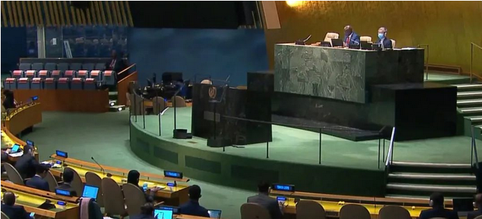
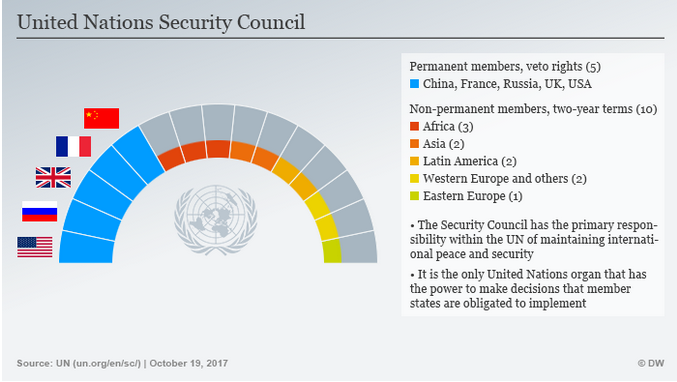

收录于合集

联合国安理会权威的合法性基础与
改革的原则之争
作者： 毛瑞鹏，上海国际问题研究院全球治理研究所研究员。
来源： 上海市社会科学界第十五届学术年会文集

导读
4月26日，联合国大会协商一致通过一项题为“在安全理事会发生投否决票情况时进行大会辩论的长期授权”的决议草案。这项立即生效的决议规定， 如果联合国安理会常任理事国中的任何一个或多个在安理会使用否决权，联大将在10日内自动召开会议，所有成员国可以对行使否决权的行动进行审查和评论 。由于常任理事国经常使用否决权，安理会的权威性和有效性严重受损。 近10年来，大国分歧不断加剧，俄乌冲突更是凸显了安理会在和平与安全问题上的有限作为。联大这项决议的出台表明会员国决心改变安理会目前的效能不足和合法性赤字 。
本文从安理会权威的合法性基础出发，对其改革原则进行了对比分析。研究发现，不同阵营对于如何提升安理会的权威存在着明显的分歧，这其中存在一个理念之争。 大国协调视角将安理会视为大国俱乐部，安理会目标是确保这一精英集团内国家间的政策协调及关系稳定。代表机构视角则认为安理会应当被视为一个代表机构，这一视角反对大国，尤其是美国继续扮演或者应当扮演国际体系“看管人”的角色 。对安理会权威合法性基础的不同认识，引发出对安理会改革原则的不同主张。效力原则基于将安理会视为大国协调的认识，强调安理会应当反映国际权力结构的现实，吸纳新兴大国成为常任理事国。代表性原则主张，安理会成员国的组成必须更具代表性，要求所有成员国均获得合理参与安理会决策的权利。从现实来看，美国应对安理会改革的政策正是基于效力原则。作者强调， 效力原则有利有弊，一方面虽然能够保证必要的效率和执行能力，另一方面，效力原则已经成为美国等国家企图限制安理会扩大以及选择性地支持个别发达国家进一步扩大其在安理会中的主导权的理论依据 。最近通过的这份决议很可能会成为联合国改革进程中的重大一步，其后续动向值得持续关注。欧亚系统科学研究会特编发此文，供读者思考。文章原刊于《上海市社会科学界第十五届学术年会文集（2017年度）》，仅代表作者本人观点。
在联合国安理会改革问题上，一个重要的现象是，不同阵营尽管所持立场不同甚至截然对立，却均以提升安理会的“合法性”来为自已的主张辩护。这反映出，一方面，各国普遍认为安理会的权威面临着挑战，需要加以改革；另一方面，不同阵营对于如何提升安理会的权威却存在着明显的分歧。主要阵营之间围绕改革方案与提升安理会权威之间的关系展开的论辩已经构成了安理会改革的理念之争。理念之争服务于并先行于各阵营之间的权力和利益之争。厘清围绕改革的理念争论是理解安理会改革进程的基础。
01
**安理会权威的合法性基础
**
安理会权威的合法性基础是《联合国宪章》。宪章第二十四条第一款明确规定，“各会员国将维持国际和平及安全之主要责任授予安全理事会”。然而在实践中安理会权威又依赖于联合国会员国对其的认同和支持，其中决策机制是影响会员国认同的重要因素。
首先，安理会的权威体现为它具有赋予成员国的行动合法性的独特地位 。美国学者伊尼斯·克劳德（Inis Claude）在1966年撰文分析了联合国具有的“集体合法化”（collective legitimation）功能。他观察到，国家将安理会看作是合法的，并因此将它们所承担的义务视为是可接受的和正确的。换言之， 安理会具有了赋予或拒绝赋予行为体及其决定合法性的权力 。而伊恩·赫德更表示相信，联合国的权力主要不在于应用物质权力改变国家的行为，而在于赋予或保留国际共同体对国家及其行为的合法性的能力，安理会被授权代表国际共同体发言和行动，它在言行上就拥有了比单个安理会成员国更大的力量。
其次，安理会权威合法性的充裕程度并非是固定不变的 。美国学者马丁·宾德（Martin Binder）和莫尼卡·休佩尔（Monika Heupel）提出国际组织的合法性来源包括三个方面：法律合法性、程序合法性与绩效合法性。法律合法性关注国际组织是否严格遵守了成员国对其的授权。程序合法性包括了四个方面的指标：参与、透明、问责制、大国主导。就安理会而言，其中参与是指非常任理事国成员参与安理会正式决策制定的能力；透明是指非常任理事国和非安理会成员国跟踪议程设置和决策制定的机会；问责是指非安理会成员或者联合国大会使安理会对其负责的机会；大国主导是指安理会中的权力失衡问题，尤其是否决权问题。绩效合法性则认为，一个国际组织的合法性取决于实现其宗旨的能力。国际组织的创建都有一个特定的目标；如果它们没有完成目标或如果造成了负面的影响，将不被视为合法。评估国际组织绩效的最明显的方式是考察国际组织是否完成了它的授权。马丁·宾德等人在分析了联合国成员国关于安理会年度报告的评论后得出结论，成员国对安理会的负面评价远超过对其的正面评价。他们提出，安理会的合法性赤字主要来自于成员国对其决策程序的不满，以及安理会在有效执行决定方面的缺陷，相比之下，安理会是否遵守了其法律授权则没有得到多少关注。
安理会程序机制与其权威之间存在着紧密的联系 。加强安理会的权威要求对安理会决策机制进行改革。当安理会的决策机制被普遍相信不合理时，它的决定的权威性也必然大打折扣。这也得到了联合国成员国在安理会改革问题上的立场的印证。法国时任总统萨科齐在第六十四届联合国大会上就称，安理会改革“关系到联合国的合法性。要么联合国实行改革，提高合法性；要么改革失败，决策活动将移至联合国之外”。南非总统祖马在同一届联大上也指出，“如果不改革安全理事会”，“安理会各项决定的合法性将继续受到质疑”。
再次，提升安理会权威合法性基础的路径因对安理会的不同认识而存在明显差异 。大国协调视角和代表机构视角是看待安理会所扮演角色以及它与联合国广大会员国间关系的两种主要视角。
大国协调视角将安理会视为大国俱乐部，安理会的基础和核心目标是确保这一精英集团内国家间的政策协调及关系稳定 。根据大国协调视角，安理会常任理事国所代表的大国之间的全体一致被视为是“联合国的法律和道德基础”。客观的说，联合国创建时主要将安理会定位为扮演大国协调的功能。新加坡外交官马凯硕（Kishore Mahbubani）就表示， 联合国建立之初，安理会的主要功能是大国协调，即确认五个常任理事国的大国地位，赋予其否决权，从而确保联合国不采取与任何一个常任理事国相冲突的行动 。之所以如此，是由于联合国的主要设计者美国总统富兰克林·罗斯福相信大国间的一致是实现持久和平的关键。澳大利亚学者赛宾·哈斯勒（Sabine Hassler）也认为，联合国创立时，安理会的定位是“大国的马基雅维利式协调”。美国学者戴维·博斯科（David Bosco）提出，安理会被理解为一个政治驱动的协商机构，关注安理会决策对常任理事国间关系的影响。我国学者刘从德等同样认为，联合国权力的核心是一种由五个常任理事国构成的“五国均势机制”。这一将大国置于优先位置的原则可以追溯到拿破仑战争后确立的欧洲协调机制，当时大国与其他国家之间的区别首次在国际外交实践中受到重视。大国被认为对欧洲体系具有总体利益，而其他国家则仅具有本国或地区利益。大国优先原则在第一次世界大战后国际联盟行政院的结构安排上也得到应用。主要盟国和参战国成为国联行政院的常任理事国。在1945年举行的旧金山会议上，墨西哥代表提出应当明确常任理事国与非常任理事国之间的区别。墨西哥提出应将安理会常任理事国界定为那些“对维持和平负有最大责任”的国家。尽管这一提案最终没有被接受，但是它仍然反映出联合国创建时人们对常任理事国与大国之间的关联性的理解。
与之形成鲜明对比的看法是，安理会应当被视为一个代表机构。这一视角反对大国，尤其是美国继续扮演或者应当扮演国际体系“看管人”的角色 。这一认识得到一些学者和国家的支持。约翰·范·奥德纳（John Van Oudenaren）认为，从根本上说，安理会改革争论的基础至少部分是，大国对于国际体系的特殊责任在多大程度上能够继续作为国际秩序的组织原则。冷战结束以来，安理会更加明显地转变为一个旨在解决全球安全问题的机构。安理会封闭性的决策机制对于参与型全球治理具有不利的影响。为此，牙买加副总理兼外交和外贸部部长肯尼思·鲍就指出：“如果安全理事会依旧是一个排他性俱乐部，无法代表联合国广大会员国的利益，多边主义也将无法运作。”同时在一些国家看来，安理会非常任理事国由普遍性机构——联合国大会——选举产生这一规定也表明，“安全理事会在很大程度上是来源于大会的一个代表机构”。
两种视角对如何提高安理会权威提出了不同的要求。从大国协调的视角来看，判定安理会成功与否将取决于： 第一，它能否调和国际体系中的大国间的关系，为这些国家间的和平与稳定发挥积极的影响；第二，它能否促进大国对现有国际秩序的认同，从而防止其试图挑战现有的秩序 。保罗·肯尼迪就表示：“联合国创立者有一条约定俗成的规矩，那就是大国一定要以某种方式接受一些特权，以免它们像20世纪二三十年代那样离开这一国际组织或成为其阻碍。”然而从代表机构的视角来看，当安理会的决议和行动逐渐不再被相信能够代表联合国会员国维护国际和平与安全时，便会引发合法性危机。当原有的权威面临着不再被接受的风险，合法性所产生的遵从拉力也相应地下降直至消失。冷战后，安理会的权威正在遭受一系列的挑战。随着世界大战的现实威胁降低，以及国际发展、人道主义危机、地区冲突等议题重要性的持续上升，国际社会尤其是中小国家对安理会的权力不平衡以及大国在安理会的特权地位越来越不满。联合国创建时确立的大国优先原则受到日益强烈的挑战。联合国大学研究人员拉梅什·塔库尔（Ramesh Thakur）2004年11月18日在南非安全研究所的报告中就表示表示，“由于安理会越来越无法代表国际社会，它的合法性日益模糊”；“随着合法性受到侵蚀，安理会规范成员国行为的能力也受到削弱。那些不再视联合国为国际共同体的可信声音的人将简单地忽视它的决定”。
02
安理会改革的原则之争
对安理会权威合法性基础的不同认识，引发出对安理会改革原则的不同主张 。在很多时候，代表性与效力经常被混合在一起论证安理会改革的方向。例如，203年联合国时任秘书长科菲·安南在联合国大会的演讲中表示：“安理会急需通过展现具有有效地应对极为困难的议题的能力，和通过更加广泛地代表国际社会及今天的地缘政治现实，来重新得到成员国和世界舆论的信任。”一些成员国也表达了非常一致的看法：“要使安理会保持其独有的合法性，就应使其更广泛地代表整个国际社会并更能反映当今的地缘政治现实。”
值得注意的是， 效力原则常常以提升安理会代表性的形式出现 ，代表性原则也常常强调增强安理会效力的重要性 。尽管在安理会的实际运作中，代表性与效力通常都是不可或缺的，然而，在论证改革的主张时，两者之间的区别却仍然是明显的。
效力原则更多基于将安理会视为大国协调的认识，强调安理会应当反映国际权力结构的现实，吸纳新兴大国成为常任理事国 。在安理会改革的争论中，效力原则主张：安理会的合法性主要不是取决于参与决策的成员国的广泛代表性，而是取决于安理会能否有效地完成《联合国宪章》的授权。效力原则的拥护者认为：“安理会改革的根本目标应当是进一步增强其有效性（effectiveness）。”荷兰首相鲍肯内德2010年在联大表示，“一个组织无论多么具有代表性，如果不能取得足够的成果，它也就失去存在的意义”。“荷兰政府坚信，联合国能够提高其有效性和果断性，并因此提高其合法性和公众支持度”。
美国学者爱德华·勒克就主张安理会改革应当遵循效力原则 。他表示，联合国的缔造者所要强调的是安理会的执行能力，威胁使用《联合国宪章》第七章规定的强制措施的可信性，以及大国间的一致；在旧金山会议上，主权平等原则是一个法律上，而不是政治上的术语，指的是在国际法下的平等状态，而不是投票权或者代表权的平等。他表示确信，“联合国的缔造者会反对那些使安理会变得更加民主、更具代表性和更加平等的主张”。总之，在勒克看来，许多依据民主、代表性和地域平等标准提出的扩大安理会的主张是与联合国创始时的本意相违背的，安理会的合法性主要来源于结果而非过程，如果需要从两者中作出选择，缔造者无疑会优先选择结果。
在此基础上，效力原则相信，应当基于候选国的能力和贡献实现安理会的扩大，从而增强安理会落实决议的能力和提升其合法性 。正是从后者出发，一些国家提出安理会已经不再充分代表那些最有能力维持国际和平与安全的国家。按照这种观点，联合国创建时，安理会常任理事国的合法性来源于赢得战争，而现在这一席位的合法性更多地归属于那些能够避免或结束战争的国家。因此，安理会常任理事国席位应当反映1945年以来经济和政治影响以及权力方面发生的全球转变，给与那些“对世界事务有重大影响的国家”。
与效力原则不同，代表性原则主张，《联合国宪章》第二十四条第一款规定安理会执行职务时代表全体会员国，所以这一机构的成员组成必须更具代表性，以使其行动更为合法 。“增进安理会的代表性，按照《宪章》第二十四条所包含的精神，实际上是一项不言而喻的要求，因为该条规定，安理会在履行它的职务时，是代表所有会员国”。“安理会结构的民主化，将进一步鼓励会员国更积极地参与安理会的工作，并将加强执行安理会决议的道义基础。”代表性原则主要是将安理会视为一个代表机构，主张联合国全体会员国尤其是中小国家获得更多的机会参与安理会的决策，反对军事和经济强国利用改革过程追求特权利益，从而增加成员国之间既有的不平等。从代表机构的视角出发，联合国内的很多发展中国家主张，“应根据公平地域分配和国家主权平等的原则决定扩充安全理事会的程度、性质和模式”。通过扩大安理会来纠正代表性不足的情况将更好地“反映这一世界机构的普遍性”。
首先，对安理会缺乏代表性的批评注意到，安理会理事国的数量与联合国会员国总数之间的比率已经大幅度地下降了 。正如马来西亚指出的，“由于过去几年来联合国会员国大幅度增加，安全理事会已不能充分代表广大会员国”；“安全理事会的成员数目必须增加，以便更加具有代表性，并符合联合国会员国大幅度增加到183个会员国的现实”。根据这一观点，1945年联合国创立时只有51个会员国，安理会有11个理事国，安理会代表了21.57%的会员国。1965年扩大至15个理事国时，安理会代表了大约13%的会员国。而目前在联合国会员国总数增加到193的时候，安理会仅代表了7.77%的会员国。“毫无疑问，安理会比之前的任何阶段都更缺乏代表性，这被认为推动了安理会扩大的倡议”。“扩大安理会再一次看起来是合理的”。据此，古巴主张，“扩大后的安理会成员数目应当不低于26个，以使得安理会成员与联合国会员国之间的比率至少有点接近联合国创立时的比率”。

安理会成员构成。图源：联合国
其次，代表性原则主张在平等和民主的基础上提高安理会的代表性，要求所有成员国均获得合理参与安理会决策的权利。 在很多会员国看来，代表性原则的本质要求是民主原则。“为了提高自身的合法性，安全理事会必须变得更加民主”。“改革的方向应当是民主的而不是精英主义的”。民主原则要求通过投票权和选举权来使安理会成员对联合国大会负责。相反，在扩大安理会的时候，延续少数几个国家享有的特权却忽视多数国家的权利，不可能实现民主、有代表性和合法的改革。
发展中国家尤其主张安理会扩大的目的是使这一机构更能够代表总体会员国，从而为其决定赢得更大的合法性 。2012年8月召开的不结盟运动组织第十六次国家或政府首脑峰会的最后文件宣布，安理会扩大和工作方法的改革应当将该机构引向一个“民主的、更具代表性的、更负责任的和更加有效力的”安理会。中国常驻联合国代表张业遂指出：“安理会改革的核心目标之一是增加安理会的代表性，使安理会组成反映联合国会员国数量和结构的巨大变化。改革应当优先增加发展中国家，特别是非洲国家的代表性。改革必须体现国际关系民主化潮流，让中、小国家有更多机会参与安理会决策。”因此，按照这一原则，改革的结果应当是：“在区域集团之间恰当和公平地分配席位，以便每个国家无论大小和资源如何，都有公平的机会来担任安理会成员并为共同的事业作出贡献。”
第三，代表性原则强调，在解决安理会成员结构上的不平衡以及席位的不均衡分配时，任何决定都必须避免增加成员国在权利和特权上既有的不平等 。广大中小国家担心，军事和经济强国可能会利用改革的过程追求特权利益，使安理会再次沦为强加它们的意愿和利益的工具：“我们必须确定安理会在全球安全和国际秩序的关键问题上的投票不是出售给出价最高的人。”
03
安理会改革原则的利益之争
**
**
效力原则与代表性原则的拥护者对于如何落实安理会改革原则从而提升安理会权威的合法性陷入了内部和外部两种分歧。原则之争的实质是利益之争。
效力原则依据对安理会规模的不同主张主要包括两种类型：一种认为安理会应当保持决策效率，为此应严格控制扩大后的规模；另一种则认为基于候选国的能力和贡献实现安理会的扩大。
美国应对安理会改革的政策正是基于效力原则 。它的代表在联大明确提出，“ 处理安全理事会扩大问题的唯一负责任的方法是像创始国所做的那样，确保那些获得永久席位的国家符合关于它们将承担的巨大义务和职责的适当标准 ”。“这些标准界定了常任理事国的资格：经济规模和人口数量；军事能力及对维和行动的贡献；致力于民主和人权；向联合国提供的捐款以及不扩散和反恐记录”。“ 在评估哪些国家具备常任理事国资格时，美国将考虑有关国家为维护国际和平与安全及联合国其他宗旨作出贡献的能力 ”。
美国明确声称支持效力原则 。2010年美国常驻联合国副代表罗丝玛丽·迪卡洛在联大一般性辩论中就声称：“美国认为，安全理事会的长期生命力取决于其能否体现二十一世纪的世界。我们支持扩大安理会，但不能削弱安理会的效力和效率。”在此之前，美国代表还曾表示：联合国的创始人“没有在一个具有代表性但过于庞大和臃肿以至于不能处理正在出现的安全局势的机构，和一个以牺性代表性为代价而行之有效的机构之间作出选择，而是设立了一个具有发挥不同作用的多种机构的系统。 为了处理安全问题，他们设立了一个由那些证明有能力为国际和平与安全作出贡献的国家所组成的机构 。为了确保世界范围的代表性，他们设立了大会 ”。美国行政和立法机构在这一问题上达成了共识。美国负责国际组织事务的助理国务卿戴维·韦尔奇（C.David Welch）2000年5月1日在参议院外交关系委员会关于联合国效率和改革的听证会上保证说：“安理会的效力将仍然是我们的首要目标。”2005年7月21日，美国参议院议员、联合国问题工作组主席乔治·米切尔（George Mitchell）在外交关系委员会关于联合国改革的听证会上提交的书面证词中也表示，“工作组没有就安理会扩大的细节达成一致”；“然而工作组确实得出结论，任何扩大都应当加强安理会的效力，无论如何不应背离安理会根据宪章采取行动的效率和能力”。
然而，在另一些效力原则的支持者看来，美国主张的目的是拖延改革 。德国政府代表在联大就表示：“效率最高的机构显然是不受透明度和问责制因素束缚的十分小型的机构。这将是比如说仅仅由五个国家组成的机构。这种机构不受议事规则牵累，因此将具有极高的效率，但这并不是我们所要的机构。这种机构将很有效率但没有合法性，因此就没有效力。这种机构将作出因没有合法性而无法执行的决定。”
支持增加新的常任理事国席位的国家也纷纷表示拥护效力原则 。例如，法国提出：“改革过程中必须考虑到新大国的崛起，它们希望承担安全理事会常任理事国的责任，而且根据《宪章》，它们能够为安理会维护国际和平与安全的行动做出重要贡献。”荷兰也宣称，“显然应该”“为那些在1945年还不够大或者还不是联合国会员国的当今大国提供空间”。一些类似的主张还包括，“我们的全球治理体制不能被1945年那时的全球力量均势所束缚”；“对维护国际和平与安全所作贡献最大的国家当然也必须拥有应有的地位”；“无论如何”，“现有五个常任理事国的权力早就该与国际新成员分享了，这些国家愿意根据《宪章》并为了国际社会的更大利益，承担其应负的责任”。
代表性原则的拥护者对于如何提升安理会的代表性也存着严重分歧。一方面，虽然公平地域分配仍被广泛接受，然而并没有得到所有国家的认可 。一些国家认为地域分配模式没有考虑到人口和经济数据，使得很多地区没有获得充足代表权。还有国家提出，强调大洲作为政治实体是没有根据的，因为它没有考虑文化、政治或宗教因素。另外一些国家又提出，还应考虑会员国的地理尤其是战略位置，会员国享有“明智而审慎”的声誉，代表世界各大文化及主要法系等。
由此可见，冷战后，在国家利益的推动下，代表性的含义已经从公平地域分配扩展开来，形成了多种含义和多个评价标准。值得注意的是，安理会改革也成为一个南北问题 。目前，北半球工业国家占到了五个常任理事国中的四个，十个非常任理事国席位中的三个。“南北之间的差距造成了，并且继续造成许多主要问题，这对国际和平与安全产生了持续的影响。因此我们需要一种新的平衡，即南北平衡。北方现在垄断着安全理事会的常任理事国席位，所以我们需要一种平衡，而且因为致力于为追求《联合国宪章》的各项宗旨而执行相互补充的概念，因此有必要确保亚洲、非洲和拉丁美洲所有这三个南方大陆在安理会拥有席位。”这一点甚至得到了美国时任国务卿奥尔布赖特的认同。她称安理会“过于以工业国为中心”。同时，尽管安理会目前的构成严重偏向北方工业化国家，它的议程却主要涉及发展中国家内的冲突，然而这些地区的代表权却是微不足道的。这进一步加剧了发展中国家对在安理会缺少代表权的不满。古巴就提出安理会改革的“主要宗旨不能是为扩大而扩大，而必须是纠正发展中国家在安理会中代表权不足这一毫无道理的现象。古巴不会支持任何有损发展中国家利益的片面或选择性地增加安理会成员数目或扩大其成员组成的做法”。
代表性原则的支持者对于是否新增常任理事国席位也陷入分歧。一方面，非洲联盟等国家集团要求获得常任理事国席位以纠正历史的不公正。 例如，毛里塔尼亚总理就要求扩大安理会，包括给予非洲大陆常任理事国代表席位。此外，主张新增常任理事国并赋予其否决权的国家还认为，只有这样才能带来公平的代表权和促进成员国家间的合作。根据约旦代表的观点，这样做之后，其他国家将不得不平等地对待发展中国家，也将更愿意接受与发展中国家间的妥协。
另一方面，主张“团结谋共识”的阵营则坚决反对增加常任理事国席位和否决权。该阵营强调，增加常任理事国席位违背民主原则 。“通过增加常任理事国数目从而扩大特权享有者队伍的方式来追求安全理事会的民主化，是自相矛盾的。民主的基础是代表性的理念及其能力，而常任理事国类别并非基于民主代表的理念，而是历史上某一特殊时刻的产物”。据此，“团结谋共识”阵营断言：“为寻求特殊地位的少数国家扩大常任理事国的范围，不论这些候选国多么值得这样做，将使安理会更加不对其行为负责，更加远离其成员国和更少能代表世界的各个地区。” 为此，“团结谋共识”阵营提出增加定期选举的非常任理事国席位是提高安理会代表性的最佳方式 。“要使安全理事会更民主、更有代表性、更好地接受问责而且更具合法性，就必须扩大非常任理事国类别，此类成员由大会定期选举产生，因而得到联合国大多数成员的支持。”
04
结语
联合国安理会改革是一场利益之争，同时也是一场理念之争。厘清围绕安理会改革的不同理念有助于准确分析各集团在改革中所持立场的依据，以及冲突的焦点。 以对安理会权威的合法性基础的不同视角出发，代表性原则和效力原则成为两种主导性的改革原则 。两者相互交织，但却仍然存在着明显的差异，据此提出的改革方案也显著不同。
尽管效力原则强调安理会应通过扩大，更好地反映国际社会和地缘政治现实，使之更具合法性，然而，正如美国学者布鲁斯·拉西特（Bruce Russett）指出的，“安理会如果增加德国和日本为常任理事国而不同时增加几个大的欠发达国家，它将冒在大多数联合国成员国看来失去合法性的风险”。“按照很多标准来说，增加德国和日本为常任理事国的方案将会造成代表性的更大程度的背离”。因此，在安理会改革过程中， 一方面效力原则对于代表性原则构成了有益的补充，因为作为担负维持国际和平与安全重任的安理会，保证必要的效率和执行能力是必不可少的，安理会扩大不应以牺牲效力为代价 。这一点在联大辩论中已经得到了普遍的认同。然而， 另一方面，效力原则已经成为美国等国家企图限制安理会扩大以及选择性地支持个别发达国家进一步扩大其在安理会中的主导权的理论依据 。这也引发了广大发展中国家和中小国家的强烈不满。随着安理会越来越多地演变为处理广泛的全球安全议题的治理机构，对更加充分的代表性的要求也逐渐提高。如何在维持安理会既有的权力结构的稳定性的同时增强其代表广大会员国，尤其是长期处于被忽视地位的发展中国家意志的能力将是未来安理会改革主要解决的问题，也将极大地关系到安理会权威的提升。
排版 | 汪平平
本文来源于欧亚系统科学研究会
文章观点不代表本平台观点